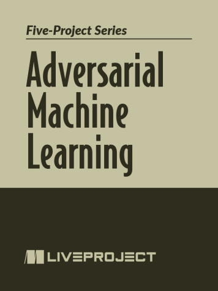

Trustworthy AI
AI now runs inside networks, power grids, hospitals and security tools. My work makes these systems trustworthy. They should be robust to attackers, honest about their uncertainty, and able to learn from sensitive data without exposing it.
Focus
- Adversarial machine learning. Attacks on and defences for deep learning models, including AI for 5G/6G wireless systems (beam prediction, channel estimation, modulation recognition).
- Uncertainty quantification. Knowing when a model should not be trusted, for deep networks, large language models and vision-language models in safety-critical and medical settings.
- Security of LLMs and agentic AI. Threats such as prompt injection and jailbreaking, and defences for systems built on large language models.
- Privacy-preserving machine learning. Federated learning, homomorphic encryption and secure multi-party computation.
- AI for critical infrastructure. Anomaly detection and robust forecasting for power systems and cyber-physical systems.
Book and course

Trustworthy AI: From Theory to Practice (2024)
Ferhat Ozgur Catak and Murat Kuzlu wrote Trustworthy AI: From Theory to Practice (2024). It covers principles and hands-on methods for robust, explainable and secure AI, with companion code. Open access · Amazon · Code

Adversarial Machine Learning (Manning liveProject series)
Hands-on projects on attacking and defending machine learning models. Manning
I also teach DAT945 Secure and Robust AI Model Development, a PhD course at the University of Stavanger.
Selected publications
- Security concerns on machine learning solutions for 6G networks in mmWave beam prediction
- Defensive distillation-based adversarial attack mitigation method for channel estimation using deep learning models in next-generation wireless networks
- Uncertainty-aware prediction validator in deep learning models for cyber-physical system data
- Exploiting epistemic uncertainty of the deep learning models to generate adversarial samples
- Uncertainty quantification in large language models through convex hull analysis
- From large language models to agentic AI: a brief survey of security threats and defense strategies
- Homomorphic encryption and federated learning based privacy-preserving CNN training: COVID-19 detection use-case
- Federated learning: overview, strategies, applications, tools and future directions
- Trustworthy cyber-physical power systems using AI: dueling algorithms for PMU anomaly detection and cybersecurity